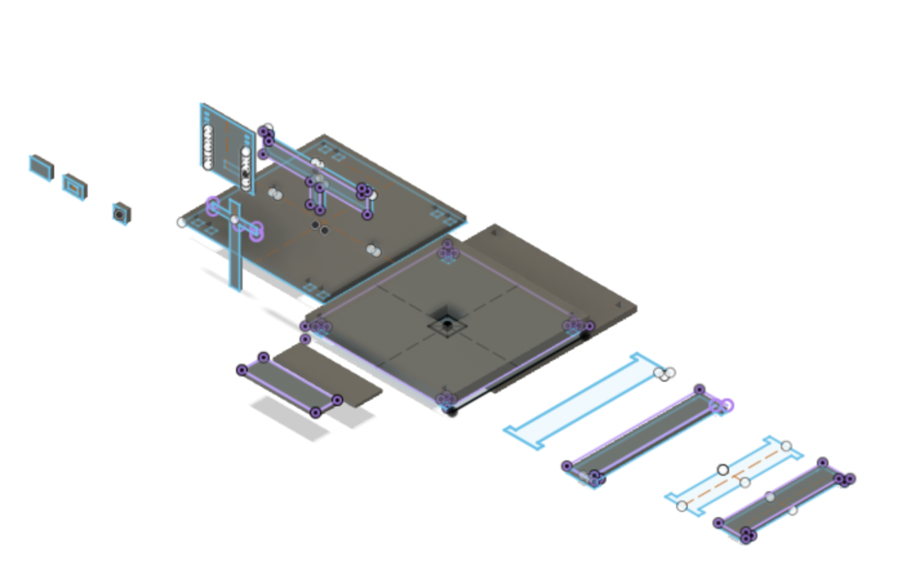
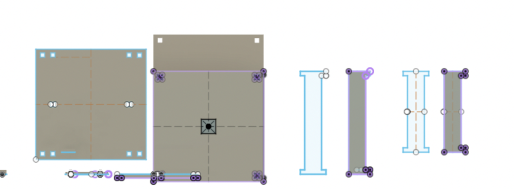
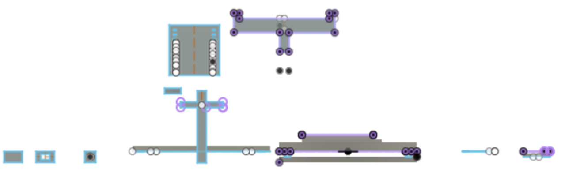

For this week, I wanted to make a stand that would slowly revolve and hold all my jewlery and accessories. Although this was a journey, and the final product definitely spins way too fast, it works! The video for it is pictured below.
First step: Making the parts in autocad
For the first step, I used Autodesk Fusion to make the individual parts of my moving sculpture. Because I knew I wanted to laser cut in acrylic, When making slits/holes I measured how thick the acrylic was and based on how tight I wanted the construction to fit together, I used varying kerf values accordingly. In th end, for press fit, my first pieces printer perfectly! I was glad that I didn't need to use any additional acrylic for the base pieces as these were the ones that took up the most surface area.
Design Limitations: When desgining this part, because I was laser cutting it and not 3d printing it, I knew there had to be certain constraints. For example, at first I wanted the shelves to be round, but after thinking hard and asking how I would make sure my jewelry doesnt fall off the shelf, there was no other option but to create a box like structure with an open top. Because I wanted two layers, one for larger jewelry and the top one for smaller earrings that could hang directly from the acrylic, only one box was needed.
Below is a view of all of the parts from this file. As you can see there is a lot! I created two planes, one for the base pieces and another for the supporting pieces that added the height and connected to the motor. This helped me organize what needed to be changed or added by only viewing one plane at a time.

As I previously mentioned, this is the base view. Here you can see the sketches and extrusions of all of the base parts.

Lastly, here is the view of all of the supporting parts. This includes the pieces that added the height, as welll as the one that connected to the motor. Becuase these had to be contiuously altered in some cases, and served a different function than the base plates, I created a different plane to visualize them in.

Second step, slight remodel and issues I had
Although I had no issues with how the pieces fit together, I, like many others, had issues on how the object was attactched to the motor. At first, I envisioned a center axis piece that would connect directly to the motor, but because the acrylic had a certain dimension, you could not cut both a center axis and a hole for the motor in the same piece. At first, I cut out an axis piece and tried to create a hole with the drill bit, which worked nice and I did not damage the acrylic, but becuase the fit wasn't precise I could not fit the motor onto it. The only option I had was to print a small piece that would fit the motor, and then directly attach the rest of the parts onto that. However, becuase it was a tall sculpture, I had issues getting it completely level. The following video is a first iteration of the piece and how it was unstable and rotating in a very crazy way.
In order to fix this, and to get the resulting video you saw up top, I drastically reduced the amount of space between the bottom and top layers, as the stand did not need that large of a gap, and reducing this would diminish the amount of freedom the device would have to spin out of its center. This helped tremendously as you can see through the resulting video. Another decisiion that I made to stablize this scultpure is to remove the distance between the base plate and the motor. Initially I thought I needed a small axis piece to attach the bottom shelf to the motor, but after a great deal of trial and error, I realized I could simply attach it by itself. This did lead to a higher friction which would cause issues later down the line, but it was a much better method than any other I was able to try. This led to the final piece you see at the top! It took well over 2 days and I learned so much about laser cutting, fusion, and how to make things (work).